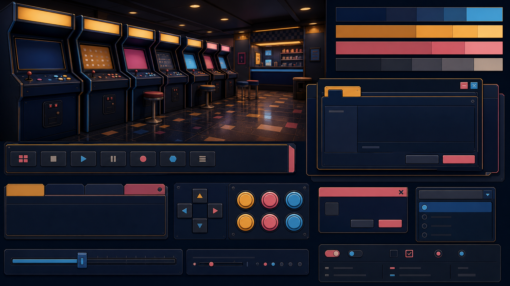
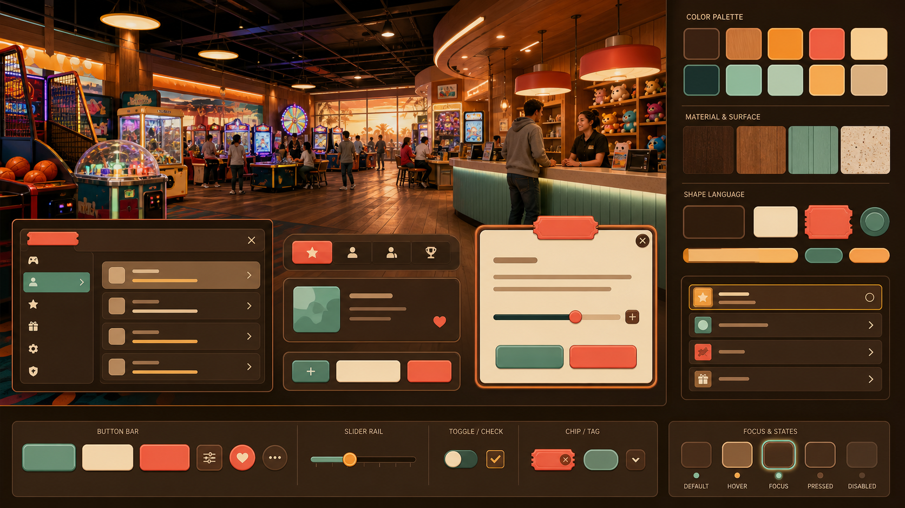
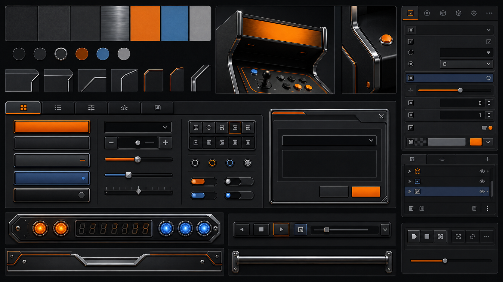
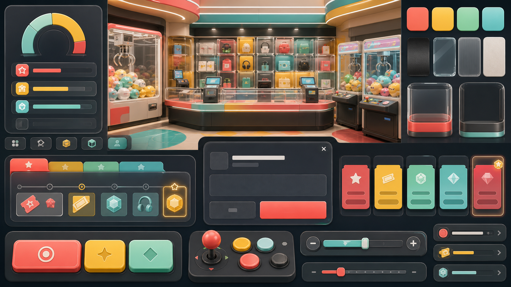
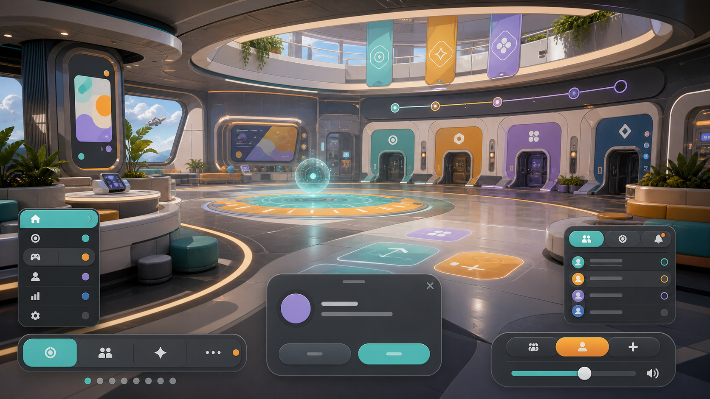

NeoCade Direction Boards
Five concept-first art directions for the Phase 3 approval gate. These boards compare the complete visual energy, layout rhythm, shape language, surface behavior, token sketches, typography handling, and accessibility risk before any theme resource work begins.
| Axis | Midnight Marquee | Boardwalk Sunset | Cabinet Chrome | Prize Pop Plaza | Orbital Playdeck |
|---|---|---|---|---|---|
| Palette Warmth | Cool navy with amber correction. | Warm pine, amber, coral, mint. | Neutral charcoal with orange focus. | Dark neutral plus bright prize colors. | Clean dark future with teal, amber, citrus, soft violet. |
| Density | Dense cabinet-row rhythm. | Moderate, open public venue flow. | Compact professional panels. | Organized prize-wall density. | Airier modular play zones. |
| Shape Language | Cabinet bezels, marquee strips, tight controls. | Small-radius panels, ticket tabs, warm counters. | Hardware rails, bevel edges, control decks. | Transparent bays, chunky controls, reward cards. | Rounded decks, capsules, modular portals. |
| Surface Material | Navy lacquered cabinet paint. | Warm stained cabinet and hospitality surfaces. | Graphite, brushed chrome, dark molded plastic. | Glass/plastic prize cases over mature dark base. | Clean consumer-tech panels and projection surfaces. |
| Accent Rhythm | Cyan, warm pink, amber marquee. | Amber primary, coral reward, mint counter. | Orange signature, blue support, red danger. | Coral, lemon, mint, aqua reward sequence. | Teal primary, amber focus, violet/citrus secondary. |
| UI Geometry | Rows, strips, stacked popups. | Balanced panels, lists, warm focus rails. | Inspector grids, tabs, sliders, deck modules. | Large 48px-friendly buttons and card tiles. | Segmented controls, team panels, wide deck spacing. |
| Risk Level | Medium: synthwave drift if pink/cyan dominate. | Low: warmth can become too brown if accents collapse. | Low-medium: could become generic editor chrome. | Medium: can become childish if novelty cues enter. | High: can become sci-fi cockpit or Tron if overdone. |
| Accessibility Status | Pass with known Architecture ratios; warm pink labels use dark text. | Pass and recommended; body/focus ratios are strongest. | Pass; muted text needs care on raised surfaces. | Pass in sketch; bright fills use black labels. | Pass in sketch; violet accents need tuning if used as text. |
| Recommended Use | Prototype continuity and cabinet nostalgia. | Default v1 candidate. | Editor-first fallback. | Playful reward-forward variant. | Future/game-world variant candidate only if constrained. |

Midnight Marquee
A cleaned-up version of the original cool cabinet-hall direction: deep navy panels, amber marquee strips, warm pink correction, and dense cabinet-row rhythm.
Mini UI Sample
Token Sketch And Contrast
- contrast: on-surface vs surface 15.63:1; body text PASS.
- contrast: muted vs raised 5.19:1; body/metadata PASS.
- contrast: primary/focus non-text vs base 8.28:1 / 11.74:1; PASS.
- needs accessibility tuning: keep pink/cyan as accents, not large competing label systems.
mono override sample: Control.theme_type_variation = "CodeSmall"
Desktop: compact cabinet density. Mobile: all touch rows expand to 48px minimum with fewer simultaneous accent rails.

Boardwalk Sunset
The recommended baseline: warm public arcade hall, amber focus, coral reward accents, mint counter color, and professional editor-safe composition.
Token Sketch And Contrast
- contrast: on-surface vs base 16.33:1; body text PASS.
- contrast: variant vs panel 9.45:1; secondary text PASS.
- contrast: focus amber vs base 10.24:1; focus ring PASS.
- contrast: danger vs raised 3.52:1; non-text PASS, body labels use black/on-surface.
mono override sample: code spans use consumer mono or Inter fallback in v1 docs.
Desktop: balanced editor panels. Mobile: 48px rows, reduced list density, same warm focus signature.
Mini UI Sample

Cabinet Chrome
The machine-polished option: charcoal panels, orange focus rhythm, chrome rails, pinball hardware cues, and the strongest editor-first discipline.
Mini UI Sample
Token Sketch And Contrast
- contrast: on-surface vs surface 14.6:1; body text PASS.
- contrast: variant vs panel 8.06:1; secondary text PASS.
- contrast: muted vs panel 4.34:1; needs accessibility tuning for small body text.
- contrast: orange focus vs base 8.73:1; focus ring PASS.
mono override sample: inspector code token preview
Desktop: strongest for dense editor panels. Mobile: 48px controls require de-densifying the inspector grid.

Prize Pop Plaza
A bright, reward-forward arcade-counter direction: transparent prize bays, mature candy accents, card/ticket states, and large approachable controls.
Mini UI Sample
Token Sketch And Contrast
- contrast: on-surface vs base 16.73:1; body text PASS.
- contrast: variant vs panel 9.87:1; secondary text PASS.
- contrast: muted vs panel 6.10:1; metadata PASS.
- contrast: coral/lemon/aqua non-text vs panel 4.78:1 / 9.32:1 / 8.17:1; PASS with black labels on fills.
mono override sample: reward_id: PRIZE_A7
Desktop: playful but organized. Mobile: naturally fits 48px tap targets, but dense prize tiles need pagination.

Orbital Playdeck
A friendly future-venue direction for the user's open sci-fi/spaceship possibility: social, bright, modular, visitable, and not a terminal/cockpit fantasy.
Token Sketch And Contrast
- contrast: on-surface vs base 17.06:1; body text PASS.
- contrast: variant vs panel 9.42:1; secondary text PASS.
- contrast: muted vs panel 5.37:1; metadata PASS.
- contrast: teal/amber/violet non-text vs panel 8.25:1 / 8.70:1 / 5.89:1; PASS, violet needs tuning for small text.
mono override sample: session_state = "ready"
Desktop: broad modular zones. Mobile: 48px segmented controls with fewer simultaneous team panels.